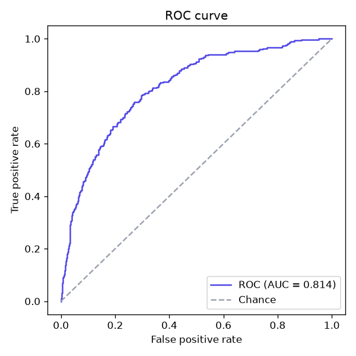
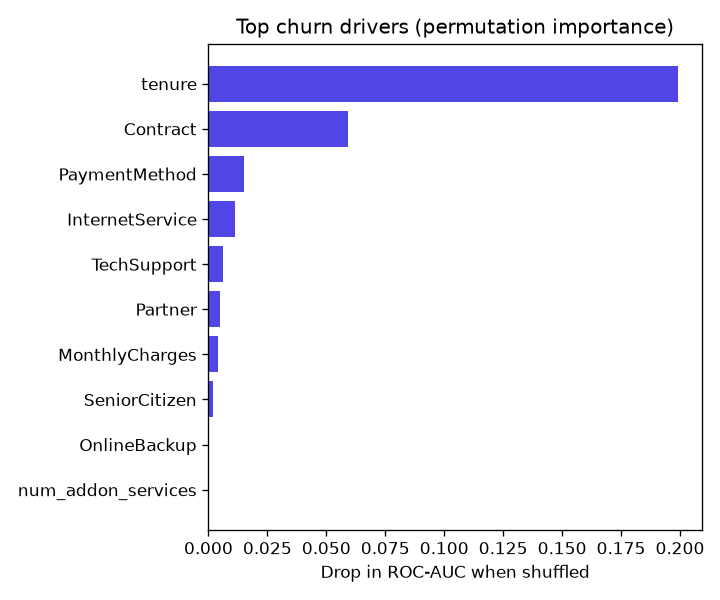

End-to-end ML service
ChurnGuard — Customer Churn Prediction
A service that predicts which telecom customers are about to cancel, so a retention team can reach them first. It covers the full lifecycle: data → features → model selection → evaluation → a served REST API, with the engineering practices of a production system.
0.81
ROC-AUC
76%
Churners caught (recall)
7,043
Customers modelled
16
Passing tests


- ✓Leak-free pipeline. All scaling and encoding live inside a scikit-learn
Pipeline, fit only on the training fold and cross-validated as one unit. - ✓Automatic model selection. Logistic regression, random forest and gradient boosting are compared by 5-fold CV ROC-AUC; the winner is saved.
- ✓Served with FastAPI.
/predictreturns a churn probability and a risk band; a new, month-to-month fibre customer scores 0.97, a loyal two-year customer 0.01. - ✓Reproducible & shipped. One seed through the whole run, a pytest suite, a Dockerfile that trains into the image, and GitHub Actions CI on Python 3.10 & 3.12.
Pythonscikit-learnpandas
FastAPIpytestDocker
GitHub Actionsmatplotlib